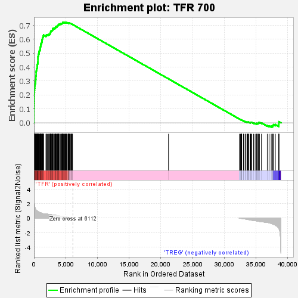
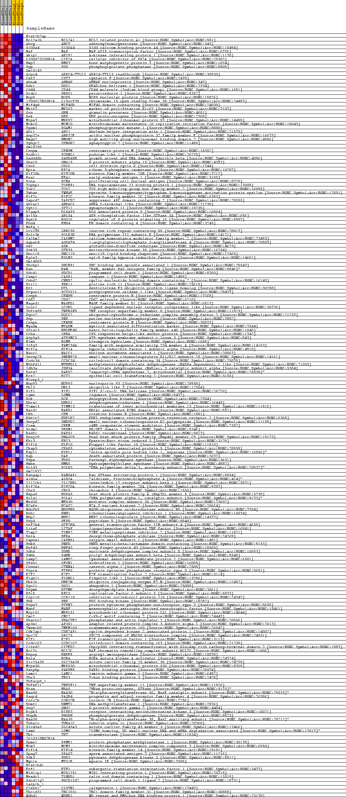
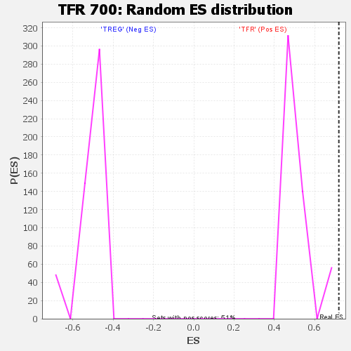

| | | Dataset | BL_TFRvsTREG_TFRvsTREG.tfr_vs_treg_cls.cls#TFR_versus_TREG |
| Phenotype | tfr_vs_treg_cls.cls#TFR_versus_TREG |
| Upregulated in class | TFR |
| GeneSet | TFR 700 |
| Enrichment Score (ES) | 0.72027194 |
| Normalized Enrichment Score (NES) | 1.3953257 |
| Nominal p-value | 0.0 |
| FDR q-value | 0.08628655 |
| FWER p-Value | 0.0 |
Table: GSEA Results Summary

Fig 1: Enrichment plot: TFR 700
Profile of the Running ES Score & Positions of GeneSet Members on the Rank Ordered List
| SYMBOL | TITLE | RANK IN GENE LIST | RANK METRIC SCORE | RUNNING ES | CORE ENRICHMENT | | 1 | Hist1h2ap | na | 4 | 3.392 | 0.0277 | Yes |
| 2 | Bcl2a1b | na | 7 | 3.262 | 0.0545 | Yes |
| 3 | Ahcy | na | 9 | 3.070 | 0.0796 | Yes |
| 4 | S100a4 | na | 11 | 2.911 | 0.1035 | Yes |
| 5 | Maf | na | 27 | 2.243 | 0.1216 | Yes |
| 6 | Akip1 | na | 34 | 2.129 | 0.1389 | Yes |
| 7 | C330027C09Rik | na | 40 | 2.052 | 0.1556 | Yes |
| 8 | Bmp7 | na | 52 | 1.993 | 0.1717 | Yes |
| 9 | Pgp | na | 54 | 1.982 | 0.1879 | Yes |
| 10 | Gm10143 | na | 59 | 1.924 | 0.2036 | Yes |
| 11 | Arpc4 | na | 69 | 1.830 | 0.2184 | Yes |
| 12 | Cst7 | na | 90 | 1.706 | 0.2319 | Yes |
| 13 | Ahnak | na | 99 | 1.663 | 0.2453 | Yes |
| 14 | Ddx1 | na | 124 | 1.532 | 0.2573 | Yes |
| 15 | Cd44 | na | 129 | 1.523 | 0.2697 | Yes |
| 16 | Prdx1 | na | 160 | 1.438 | 0.2807 | Yes |
| 17 | Nop9 | na | 224 | 1.291 | 0.2897 | Yes |
| 18 | 1700017B05Rik | na | 255 | 1.228 | 0.2990 | Yes |
| 19 | Mif4gd | na | 270 | 1.207 | 0.3086 | Yes |
| 20 | Mki67 | na | 286 | 1.180 | 0.3179 | Yes |
| 21 | Grn | na | 290 | 1.167 | 0.3274 | Yes |
| 22 | Dek | na | 295 | 1.157 | 0.3368 | Yes |
| 23 | Mrps7 | na | 340 | 1.105 | 0.3447 | Yes |
| 24 | Mcm10 | na | 342 | 1.104 | 0.3537 | Yes |
| 25 | Pgam1 | na | 343 | 1.104 | 0.3628 | Yes |
| 26 | Ahi1 | na | 348 | 1.099 | 0.3717 | Yes |
| 27 | Anp32e | na | 399 | 1.057 | 0.3791 | Yes |
| 28 | Hmgn2 | na | 402 | 1.055 | 0.3877 | Yes |
| 29 | Syngr2 | na | 474 | 1.000 | 0.3941 | Yes |
| 30 | Gm10259 | na | 490 | 0.987 | 0.4018 | Yes |
| 31 | Cenpm | na | 506 | 0.979 | 0.4095 | Yes |
| 32 | Podnl1 | na | 535 | 0.963 | 0.4166 | Yes |
| 33 | Gadd45b | na | 559 | 0.937 | 0.4237 | Yes |
| 34 | Gna15 | na | 603 | 0.904 | 0.4300 | Yes |
| 35 | Cdc6 | na | 609 | 0.899 | 0.4373 | Yes |
| 36 | Rpia | na | 624 | 0.890 | 0.4443 | Yes |
| 37 | Kif20b | na | 625 | 0.889 | 0.4516 | Yes |
| 38 | Eea1 | na | 627 | 0.889 | 0.4588 | Yes |
| 39 | Pcna | na | 630 | 0.888 | 0.4661 | Yes |
| 40 | Topbp1 | na | 635 | 0.884 | 0.4732 | Yes |
| 41 | Tox2 | na | 658 | 0.869 | 0.4798 | Yes |
| 42 | Ywhae | na | 680 | 0.860 | 0.4863 | Yes |
| 43 | Kif2c | na | 704 | 0.847 | 0.4927 | Yes |
| 44 | Sapcd2 | na | 766 | 0.819 | 0.4978 | Yes |
| 45 | Abracl | na | 774 | 0.816 | 0.5043 | Yes |
| 46 | Syt11 | na | 795 | 0.806 | 0.5104 | Yes |
| 47 | Dlgap5 | na | 822 | 0.794 | 0.5163 | Yes |
| 48 | Arl5a | na | 885 | 0.769 | 0.5210 | Yes |
| 49 | Rgs16 | na | 969 | 0.735 | 0.5249 | Yes |
| 50 | Ehd4 | na | 987 | 0.730 | 0.5304 | Yes |
| 51 | Mafg_1 | na | 999 | 0.725 | 0.5361 | Yes |
| 52 | Lrrc59 | na | 1003 | 0.724 | 0.5420 | Yes |
| 53 | Polr3k | na | 1029 | 0.718 | 0.5472 | Yes |
| 54 | Calhm2 | na | 1047 | 0.711 | 0.5526 | Yes |
| 55 | Agpat4 | na | 1070 | 0.705 | 0.5578 | Yes |
| 56 | Gsr | na | 1081 | 0.701 | 0.5633 | Yes |
| 57 | Stk35 | na | 1100 | 0.697 | 0.5686 | Yes |
| 58 | Unc119 | na | 1191 | 0.667 | 0.5718 | Yes |
| 59 | Egln3 | na | 1211 | 0.660 | 0.5767 | Yes |
| 60 | Gm14005 | na | 1244 | 0.651 | 0.5812 | Yes |
| 61 | Shcbp1 | na | 1252 | 0.648 | 0.5863 | Yes |
| 62 | Ran | na | 1263 | 0.643 | 0.5914 | Yes |
| 63 | Pdcd1 | na | 1297 | 0.634 | 0.5957 | Yes |
| 64 | Casp1 | na | 1307 | 0.631 | 0.6007 | Yes |
| 65 | Cnbd2 | na | 1334 | 0.622 | 0.6051 | Yes |
| 66 | Prr11 | na | 1372 | 0.609 | 0.6091 | Yes |
| 67 | Dtl | na | 1396 | 0.604 | 0.6135 | Yes |
| 68 | Pcyox1l | na | 1438 | 0.594 | 0.6173 | Yes |
| 69 | Cenph | na | 1472 | 0.587 | 0.6213 | Yes |
| 70 | Cd82 | na | 1485 | 0.584 | 0.6258 | Yes |
| 71 | Maged1 | na | 1506 | 0.581 | 0.6300 | Yes |
| 72 | Lcorl | na | 1890 | 0.561 | 0.6247 | Yes |
| 73 | Tnfrsf8 | na | 1950 | 0.556 | 0.6278 | Yes |
| 74 | Uqcc2 | na | 1978 | 0.554 | 0.6316 | Yes |
| 75 | Pnp | na | 2108 | 0.538 | 0.6327 | Yes |
| 76 | Cenpn | na | 2274 | 0.519 | 0.6327 | Yes |
| 77 | Myadm | na | 2343 | 0.509 | 0.6351 | Yes |
| 78 | Stra13 | na | 2462 | 0.492 | 0.6361 | Yes |
| 79 | Lrba | na | 2516 | 0.482 | 0.6387 | Yes |
| 80 | Atp5g3 | na | 2544 | 0.479 | 0.6420 | Yes |
| 81 | Blmh | na | 2585 | 0.476 | 0.6448 | Yes |
| 82 | Itfg3 | na | 2609 | 0.472 | 0.6481 | Yes |
| 83 | Hif1a | na | 2628 | 0.469 | 0.6515 | Yes |
| 84 | Nacc1 | na | 2633 | 0.468 | 0.6552 | Yes |
| 85 | Snrnp25 | na | 2665 | 0.462 | 0.6582 | Yes |
| 86 | Ccdc34 | na | 2738 | 0.451 | 0.6601 | Yes |
| 87 | Mthfd1l | na | 2799 | 0.441 | 0.6621 | Yes |
| 88 | Idh3a | na | 2874 | 0.437 | 0.6638 | Yes |
| 89 | Dars2 | na | 2939 | 0.425 | 0.6657 | Yes |
| 90 | Ect2 | na | 2957 | 0.421 | 0.6687 | Yes |
| 91 | Hivep3_1 | na | 2975 | 0.419 | 0.6717 | Yes |
| 92 | Nup93 | na | 2981 | 0.418 | 0.6750 | Yes |
| 93 | Ubl3 | na | 2995 | 0.414 | 0.6780 | Yes |
| 94 | Pif1 | na | 3065 | 0.411 | 0.6796 | Yes |
| 95 | Lgmn | na | 3259 | 0.389 | 0.6778 | Yes |
| 96 | Dck | na | 3298 | 0.384 | 0.6800 | Yes |
| 97 | Dhrs1 | na | 3334 | 0.378 | 0.6822 | Yes |
| 98 | Timm13 | na | 3399 | 0.369 | 0.6836 | Yes |
| 99 | Bard1 | na | 3421 | 0.367 | 0.6861 | Yes |
| 100 | Ckb | na | 3450 | 0.363 | 0.6883 | Yes |
| 101 | Kdelr2 | na | 3463 | 0.360 | 0.6910 | Yes |
| 102 | Snrpd2 | na | 3541 | 0.348 | 0.6918 | Yes |
| 103 | Crem | na | 3649 | 0.332 | 0.6918 | Yes |
| 104 | Prdm1 | na | 3676 | 0.329 | 0.6938 | Yes |
| 105 | Rad51 | na | 3677 | 0.328 | 0.6965 | Yes |
| 106 | Dnajc9 | na | 3744 | 0.318 | 0.6974 | Yes |
| 107 | Ebi3 | na | 3796 | 0.311 | 0.6987 | Yes |
| 108 | Klf10 | na | 3817 | 0.308 | 0.7007 | Yes |
| 109 | Ckap5 | na | 3838 | 0.306 | 0.7027 | Yes |
| 110 | Espl1 | na | 3905 | 0.295 | 0.7034 | Yes |
| 111 | Dap | na | 3914 | 0.293 | 0.7056 | Yes |
| 112 | Fdps | na | 3918 | 0.292 | 0.7079 | Yes |
| 113 | Hmbs | na | 4076 | 0.270 | 0.7061 | Yes |
| 114 | Pold3 | na | 4083 | 0.270 | 0.7081 | Yes |
| 115 | Gm21972 | na | 4110 | 0.266 | 0.7096 | Yes |
| 116 | Rangap1 | na | 4227 | 0.251 | 0.7087 | Yes |
| 117 | Aldoa | na | 4251 | 0.247 | 0.7101 | Yes |
| 118 | Il12rb1 | na | 4259 | 0.246 | 0.7120 | Yes |
| 119 | Kif20a | na | 4271 | 0.245 | 0.7137 | Yes |
| 120 | Cbx5 | na | 4391 | 0.229 | 0.7125 | Yes |
| 121 | Hspa5 | na | 4418 | 0.225 | 0.7137 | Yes |
| 122 | Pola1 | na | 4472 | 0.218 | 0.7141 | Yes |
| 123 | Med30 | na | 4487 | 0.216 | 0.7155 | Yes |
| 124 | H2afv | na | 4509 | 0.212 | 0.7167 | Yes |
| 125 | Ndufb9 | na | 4514 | 0.212 | 0.7184 | Yes |
| 126 | Rnh1 | na | 4524 | 0.211 | 0.7199 | Yes |
| 127 | Nhp2 | na | 4606 | 0.200 | 0.7194 | Yes |
| 128 | Pepd | na | 4636 | 0.196 | 0.7203 | Yes |
| 129 | Gtf2h4 | na | 4716 | 0.184 | 0.7197 | No |
| 130 | Litaf | na | 4819 | 0.170 | 0.7185 | No |
| 131 | Timp2 | na | 4833 | 0.170 | 0.7196 | No |
| 132 | Dera | na | 4930 | 0.157 | 0.7184 | No |
| 133 | Capns1 | na | 4967 | 0.152 | 0.7187 | No |
| 134 | Pnkd | na | 4982 | 0.150 | 0.7196 | No |
| 135 | Rnf43 | na | 5047 | 0.141 | 0.7191 | No |
| 136 | Sdhd | na | 5098 | 0.136 | 0.7189 | No |
| 137 | P4hb | na | 5153 | 0.128 | 0.7185 | No |
| 138 | Lamp2 | na | 5175 | 0.125 | 0.7190 | No |
| 139 | Sfxn1 | na | 5227 | 0.118 | 0.7187 | No |
| 140 | Ctnna1 | na | 5242 | 0.116 | 0.7193 | No |
| 141 | Ptprs | na | 5432 | 0.089 | 0.7151 | No |
| 142 | E2f2 | na | 5439 | 0.088 | 0.7157 | No |
| 143 | Fignl1 | na | 5443 | 0.088 | 0.7163 | No |
| 144 | Ube2n | na | 5447 | 0.087 | 0.7170 | No |
| 145 | Sgol1 | na | 5475 | 0.083 | 0.7170 | No |
| 146 | Dtymk | na | 5478 | 0.083 | 0.7176 | No |
| 147 | Rfc5 | na | 5539 | 0.074 | 0.7166 | No |
| 148 | Ccp110 | na | 5558 | 0.070 | 0.7167 | No |
| 149 | Pbk | na | 5576 | 0.067 | 0.7169 | No |
| 150 | Ptpn7 | na | 5698 | 0.052 | 0.7142 | No |
| 151 | Manf | na | 5706 | 0.051 | 0.7144 | No |
| 152 | Mrpl51 | na | 5734 | 0.048 | 0.7141 | No |
| 153 | Cmc2 | na | 5904 | 0.025 | 0.7099 | No |
| 154 | Phactr2 | na | 5912 | 0.024 | 0.7100 | No |
| 155 | Ap3s1 | na | 5913 | 0.024 | 0.7102 | No |
| 156 | Tmem160 | na | 5920 | 0.023 | 0.7102 | No |
| 157 | Cdk2ap1 | na | 6027 | 0.009 | 0.7075 | No |
| 158 | Spc25 | na | 6072 | 0.004 | 0.7064 | No |
| 159 | E2f1 | na | 21205 | 0.000 | 0.3156 | No |
| 160 | Ccdc167 | na | 32377 | -0.004 | 0.0272 | No |
| 161 | Cited2 | na | 32561 | -0.030 | 0.0227 | No |
| 162 | Bcl7c | na | 32640 | -0.040 | 0.0210 | No |
| 163 | Rnpep | na | 32727 | -0.051 | 0.0192 | No |
| 164 | Bora | na | 32745 | -0.054 | 0.0192 | No |
| 165 | Slc25a39 | na | 32747 | -0.055 | 0.0196 | No |
| 166 | Mrps30 | na | 33020 | -0.090 | 0.0134 | No |
| 167 | Parpbp | na | 33062 | -0.095 | 0.0131 | No |
| 168 | Lamc1 | na | 33293 | -0.128 | 0.0082 | No |
| 169 | Ybx3 | na | 33343 | -0.136 | 0.0080 | No |
| 170 | Tnfaip8_1 | na | 33575 | -0.171 | 0.0035 | No |
| 171 | Tnfsf11 | na | 33644 | -0.180 | 0.0032 | No |
| 172 | Hras | na | 33666 | -0.184 | 0.0042 | No |
| 173 | Naa50 | na | 33737 | -0.196 | 0.0040 | No |
| 174 | Paqr4 | na | 33824 | -0.210 | 0.0035 | No |
| 175 | Coro2b | na | 33841 | -0.212 | 0.0048 | No |
| 176 | Dnmt1 | na | 34076 | -0.250 | 0.0008 | No |
| 177 | Gng2 | na | 34083 | -0.252 | 0.0027 | No |
| 178 | Ripk3 | na | 34151 | -0.262 | 0.0032 | No |
| 179 | Phgdh | na | 34226 | -0.277 | 0.0035 | No |
| 180 | Naa38 | na | 34315 | -0.296 | 0.0037 | No |
| 181 | Tuba1c | na | 34621 | -0.353 | -0.0013 | No |
| 182 | Slc43a3 | na | 34861 | -0.363 | -0.0045 | No |
| 183 | Lsm6 | na | 35077 | -0.389 | -0.0069 | No |
| 184 | Tkt | na | 35105 | -0.395 | -0.0043 | No |
| 185 | 2610318N02Rik | na | 35278 | -0.430 | -0.0052 | No |
| 186 | Ppme1 | na | 35316 | -0.439 | -0.0026 | No |
| 187 | Mcm7 | na | 35405 | -0.444 | -0.0012 | No |
| 188 | Kif14 | na | 35431 | -0.447 | 0.0018 | No |
| 189 | Spag7 | na | 35546 | -0.465 | 0.0027 | No |
| 190 | Pdk3 | na | 35858 | -0.512 | -0.0011 | No |
| 191 | Myo1e | na | 36775 | -0.582 | -0.0200 | No |
| 192 | Hist1h4i | na | 37056 | -0.644 | -0.0219 | No |
| 193 | Etf1 | na | 37398 | -0.739 | -0.0247 | No |
| 194 | Mid1ip1 | na | 37602 | -0.809 | -0.0233 | No |
| 195 | Mesdc1 | na | 37661 | -0.835 | -0.0179 | No |
| 196 | Pdcd1lg2 | na | 37752 | -0.870 | -0.0131 | No |
| 197 | Larp1b_1 | na | 38045 | -0.982 | -0.0126 | No |
| 198 | Clstn1 | na | 38585 | -1.406 | -0.0149 | No |
| 199 | Tbc1d31 | na | 38604 | -1.433 | -0.0036 | No |
| 200 | Wdhd1 | na | 38608 | -1.437 | 0.0081 | No |
Table: GSEA details [plain text format]

Fig 2: TFR 700
Blue-Pink O' Gram in the Space of the Analyzed GeneSet

Fig 3: TFR 700: Random ES distribution
Gene set null distribution of ES for TFR 700